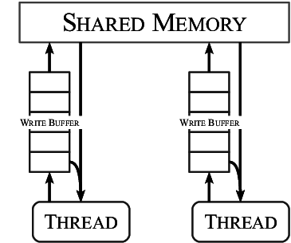

本次课内容与目标
理解和使用互斥锁 API
- lock(), unlock()
在多处理器系统上实现互斥
- 硬件提供的同步机制
- 自旋锁 (spin lock)
共享内存上的互斥
互斥：直观理解
理解并发的另一个工具：把线程想象成人、把共享内存想象成物理世界
- 物理世界是天生并发的，在小范围宏观意义上，所有部分的空间 “同时” 沿着时间方向前进)
- 物理世界 = 共享内存
- 我们 (根据想法执行物理世界动作) = 线程 (根据程序局部状态访问共享状态)
互斥：直观理解
线程 (我) 想不被别人打断地做一件事
- 一旦某个人已经开始，其他人就必须等待

共享内存上的互斥：问题定义
互斥 (mutual exclusion)，“互相排斥”
- 实现
lock_t数据结构和lock/unlockAPI:
typedef struct {
...
} lock_t;
void lock(lock_t *lk); // 试图获得锁的独占访问，成功获得后返回
void unlock(lock_t *lk); // 释放锁的独占访问
一把 “排他性” 的锁——对于锁对象 lk
- 如果某个线程处于
lock和unlock之间，则其他线程的lock不能返回
实现互斥为什么困难？
共享内存上的互斥
失败的尝试
成功的尝试
困难之处在于：
- load (环顾四周) 的时候不能写，只能 “干看”
- store (改变物理世界状态) 的时候不能读，只能 “闭着眼睛动手”
- 所以才有 Peterson 等非常 “巧妙” 的算法
- 这是《操作系统》课
- 风格：
简单、粗暴 (稳定)、有效
Peterson 算法的另一个问题
并发编程：从入门到放弃
- 顺序、原子性、可见性的丢失
即便是一条指令，也不能保证原子性 sum.c
- 运行结果
sum = 12615418- 假设指令执行是原子不可分割的，那么
sum应该完全正确才对
- 假设指令执行是原子不可分割的，那么
sum = 9894505- 一条
add可以看成t = load(x); t++; store(x, t)
- 一条
实现互斥：软件不够，硬件来凑
如果可以在一条指令内同时完成读写？
假设硬件能为我们提供一条 “瞬间完成” 的 load-exec-store 的指令
- 行为如 xchg
- 但 “立即完成”，不会被打断
int xchg(volatile int *addr, int newval) {
int result;
result = *addr;
addr = newval;
return result;
}
x86 原子操作：LOCK 指令前缀
例子：sum-atomic.c
sum = 40000000
x86 的原子操作保证：
原子性 : load/store 不会被打断顺序 ：线程 (处理器) 执行的乱序只能不能越过原子操作多处理器之间的可见性 ：若原子操作 $A$ 发生在 $B$ 之前，则 $A$ 之前的 store 对 $B$ 之后的 load 可见
x86 原子操作：xchg
int xchg(volatile int *addr, int newval) {
int result;
asm volatile ("lock xchg %0, %1"
: "+m"(*addr), "=a"(result) : "1"(newval) : "cc");
return result;
}
用 xchg 实现互斥
用 xchg 实现互斥
如何协调宿舍若干位同学上厕所问题？
- 在厕所门口放一个桌子 (共享变量)
- 初始时，桌上是 🔑
- 每个同学可以完成原子操作
- 拿任何和东西和桌上的物品交换 (xchg)
实现互斥的协议
- 想上厕所的同学，拿一张 🔖 字条和桌上的东西交换
- 得到 🔑: 进入厕所
- 得到字条 🔖: 重试
- 出厕所的同学
- 将手上的 🔑 和桌上的物品 (🔖) 交换 (还钥匙)
实现互斥：自旋锁
int table = KEY;
void lock() {
retry:
int got = xchg(&table, NOTE);
if (got != KEY)
goto retry;
assert(got == KEY);
}
void unlock() {
xchg(&table, KEY)
}
实现互斥：自旋锁 (cont'd)
int locked = 0;
void lock() {
while (xchg(&locked, 1)) ;
}
void unlock() {
xchg(&locked, 0);
}
并发编程：千万小心
- 理论证明 (用 model checker 检查 mutex-xchg.yaml)
互斥：阻止并发的发生
在共享内存上，共享资源的访问太危险 (原子性、顺序、可见性的丧失)，互斥用来阻止代码块之间的并发，实现 “串行化”
- lock/unlock 保护的区域成为一个
原子 的黑盒子 - 黑盒子的代码不能随意并发，
顺序 满足要么 $T_1 \to T_2$，要么 $T_2 \to T_1$ - 且先完成的黑盒子的内存访问在之后的黑盒子中
可见
测试一下实现是否正确
原子指令的硬件实现
Lock 前缀的诞生：Bus Lock (80486)
简单粗暴：锁住总线，内存就是我的了

Lock 指令前缀的现代实现
在 L1 cache 层保持一致性 (ring/mesh bus)
- 相当于每个 cache line 有分别的锁
- store(x) 进入 L1 缓存即保证对其他处理器可见
- 但要小心 store buffer 和乱序执行
L1 cache line 根据状态进行协调
- M (Modified), 脏值
- E (Exclusive), 独占访问
- S (Shared), 只读共享
- I (Invalid), 不拥有 cache line
理解 x86 内存模型 (指令运行的行为)
Further reading: x86-TSO: A rigorous and usable programmer's model for x86 multiprocessors
- 乱序执行使单线程执行更快；同时也让并行程序的行为更难理解

RISC-V: 另一种原子操作的设计
考虑常见的原子操作：
- atomic test-and-set
reg = load(x); if (reg == XX) { store(x, YY); }
- lock xchg
reg = load(x); store(x, XX);
- lock add
t = load(x); t++; store(x, t);
它们的本质都是：
- load
- exec (处理器本地寄存器的运算)
- store
Load-Reserved/Store-Conditional (LR/SC)
LR: 在内存上标记 reserved (盯上你了)，中断、其他处理器写入都会导致标记消除
lr.w rd, (rs1)
rd = M[rs1]
reserve M[rs1]
SC: 如果 “盯上” 未被解除，则写入
sc.w rd, rs2, (rs1)
if still reserved:
M[rs1] = rs2
rd = 0
else:
rd = nonzero
使用 LR/SC 实现原子指令
只要 lr/sc 满足顺序/可见性/原子性，lr 到 sc 之间的区域就是原子的！
- 用原子的 load/store 实现了一段代码的原子性 (精妙)
- 偶尔会失败，提供 abort 机制
void do_lrsc(){
while (1) {
[1] t = lr(x);
[2] t = f1/f2(t); // 不同线程可以执行不同操作
[3] if (sc(x, t) == SUCC) {
[4] break;
}
}
}
- 状态机建模
Compare-and-Swap 的 LR/SC 实现
int cas(int *addr, int cmp_val, int new_val) {
int old_val = *addr;
if (old_val == cmp_val) {
*addr = new_val; return 0;
} else
return 1;
}
cas:
lr.w t0, (a0) # Load original value.
bne t0, a1, fail # Doesn’t match, so fail.
sc.w t0, a2, (a0) # Try to update.
bnez t0, cas # Retry if store-conditional failed.
li a0, 0 # Set return to success.
jr ra # Return.
fail:
li a0, 1 # Set return to failure.
jr ra # Return
LR/SC 的硬件实现

BOOM (Berkeley Out-of-Order Processor)
- riscv-boom
lsu/dcache.scala- 留意
s2_sc_fail的条件 (s2 是流水线 Stage 2) - (yzh 扒出的代码)
什么是 “CPU 的实现”？
- CPU = 数字逻辑电路
- 寄存器 + 组合逻辑
- 硬件描述语言 (HDL)
- Verilog, Chisel (on Scala)
总结
总结
本次课内容与目标
- 理解和使用互斥锁 API (lock, unlock)
- 在多处理器系统上实现互斥 (xchg, LR/SC 和自旋锁)
Take-away messages
- 动手很重要
- 写测试代码
- 用 model checker 证明
- 软件不够，硬件来凑
- 这是 system 里的常用手段